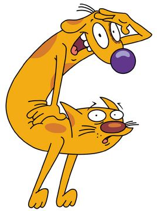

Durban Paws Rescue finds loving homes for abandoned and stray dogs and cats across eThekwini.
Adopt, Foster, or VolunteerWho We Are
Founded in 2018, Durban Paws Rescue is a volunteer-run non-profit organisation working to reduce the number of stray and abandoned animals in and around Durban. Through foster-based rescue, sterilisation drives, and responsible rehoming, we give vulnerable animals a second chance at a safe, loving home.
Learn more about our story →What We Do
-
Rescue & Rehabilitation
We take in injured, sick, and abandoned animals and provide veterinary care and foster support.
-
Adoption
We carefully match rehabilitated animals with screened, loving forever homes.
-
Sterilisation Drives
We run regular community sterilisation drives to reduce animal overpopulation at its source.
Want to help?
Whether you can adopt, foster, volunteer, or sponsor, there is a place for you at Durban Paws Rescue.
Get in Touch